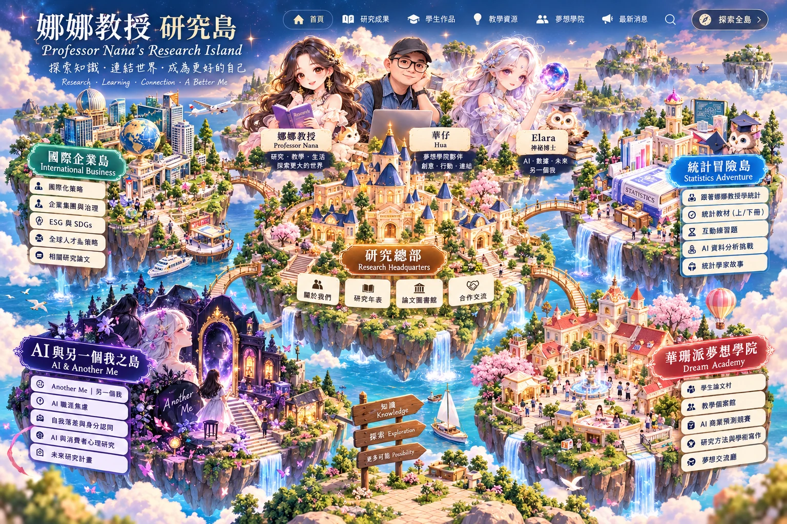

✦ RESEARCH · LEARNING · CONNECTION
探索娜娜教授的研究世界
點選島嶼，走進知識、想像與研究的奇幻旅程
⭐ 研究靈感星星尋寶
探索五座島、完成五道知識挑戰，解鎖研究島探險家證書！
✨ 與三位島主對話
點選娜娜、華仔或 Elara，探索研究、行銷與統計小挑戰。無須登入或付費。
五座島嶼，一個持續成長的知識世界
從國際企業研究到統計教學，從 AI 自我探索到學生研究成果。這是一座持續更新的學術群島。
RESEARCH LIBRARY
研究成果圖書館
搜尋研究主題，依娜娜、華仔或共同研究篩選。正式書目持續核對。
📌 期刊條目依提供的作者履歷初步整理，尚未全部經出版社核實；其他研究主題為展示目錄。DOI 不會在未確認前標示。
MEET THE HOSTS